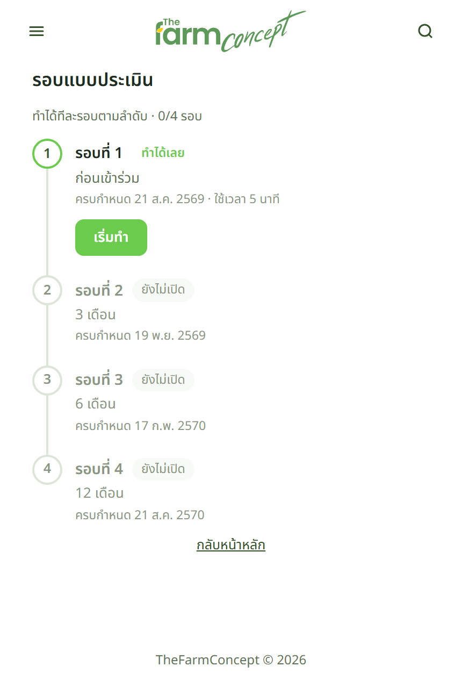

ผู้เข้าร่วม
ตอบแบบประเมิน



| ขั้น | หน้าจอบอกอะไร |
|---|---|
| 1 · เข้าระบบ | กดปุ่มในการ์ด LINE เข้าได้เลย · หรือสแกน QR แล้วกรอก เบอร์โทร + รหัสบุคคล |
| 2 · หน้าหลัก | ไทม์ไลน์บอกว่ามีกี่รอบ ตอบไปแล้วกี่รอบ และรอบไหนถึงคิว — ทำได้ทีละรอบตามลำดับ ข้ามไม่ได้ |
| 3 · ตอบ | ตอบทีละข้อ มีแถบความคืบหน้าด้านบน หน้าตาเดียวกับแบบประเมินหลังกิจกรรม |
| 4 · ส่งแล้ว | ได้ใบยืนยันระบุชื่อรอบและวันเวลาที่ส่ง เก็บไว้อ้างอิงได้โดยไม่ต้องถามเจ้าหน้าที่ |
ตอบแทนคนอื่นได้ — สำหรับผู้สูงอายุหรือคนที่ใช้มือถือไม่สะดวก เปิดเมนูมุมบน เลือก ทำแทนคนอื่น
แล้วกรอกเบอร์กับรหัสบุคคลของเจ้าตัวเพื่อยืนยัน · ใบยืนยันจะระบุว่า "ตอบในนามของ" ใคร
เจอปัญหาให้ทำอย่างไร
| อาการ | ให้ทำ |
|---|---|
| อยากข้ามไปตอบรอบ 6 เดือนก่อน | ทำไม่ได้ ต้องเรียงตามลำดับรอบ เพราะรายงานเทียบผลแบบก่อน–หลัง |
| ตอบไปแล้วอยากแก้คำตอบ | แก้เองไม่ได้ ต้องแจ้งเจ้าหน้าที่ |
| เลยวันครบกำหนดไปแล้ว | ยังตอบได้ ระบบบันทึกวันที่ตอบจริงไว้ · เจ้าหน้าที่เห็นว่าใครตอบช้าจากหน้ารอบติดตาม |